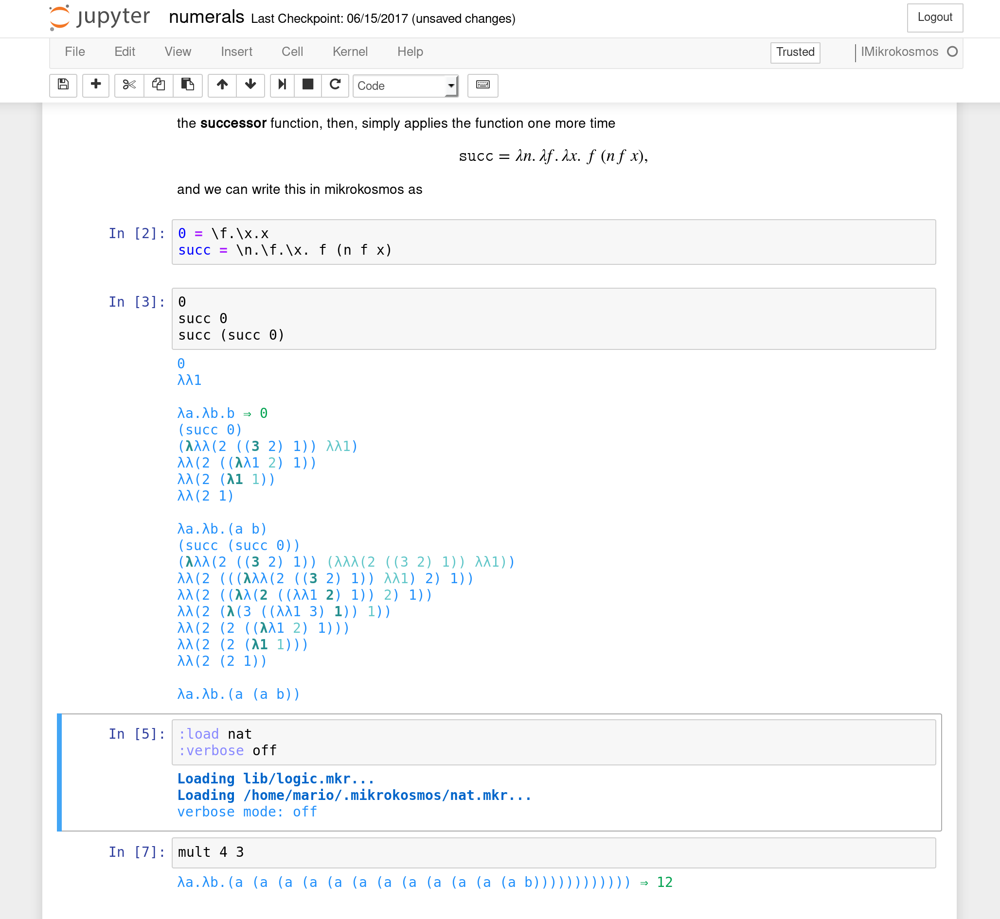
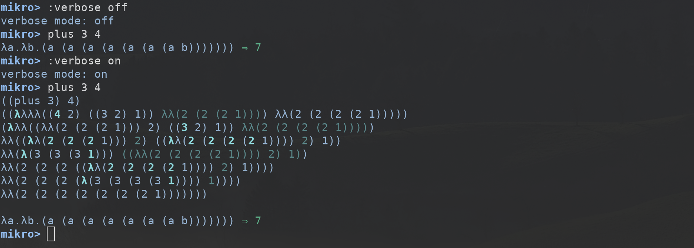
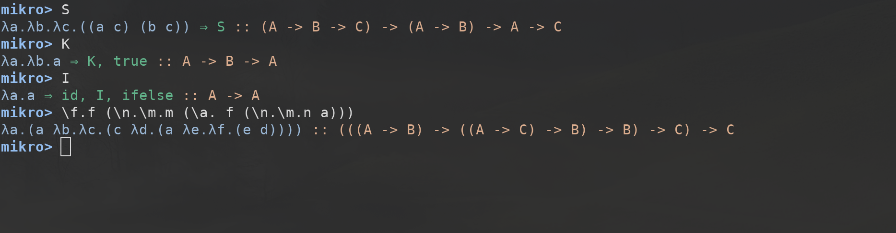
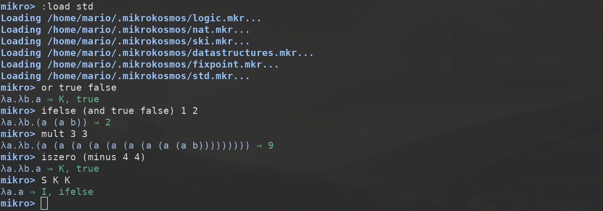

Mikrokosmos
User's guide (v0.8.0)
Table of Contents
1 Mikrokosmos

Mikrokosmos is an untyped and simply typed λ-calculus interpreter, borrowing its name from the series of progressive piano études Mikrokosmos written by Bela Bartok. It aims to provide students with a tool to learn and understand the λ-calculus.
2 Installation
Quick start: it should be possible to install the interpreter and the
Jupyter kernel only with the two following commands, provided that cabal
and pip are installed.
cabal install mikrokosmos sudo pip install imikrokosmos
If you want to add custom libraries, they should be placed under
~/.mikrokosmos/. The following sections explain in more detail each
step.
2.1 Mikrokosmos
Mikrokosmos is installable from Hackage. The Haskell tools cabal and stack can be used to install it. For instance, it can be installed using cabal with the following commands.
cabal update cabal install mikrokosmos
Binaries are also available from the GitHub repository. Manual installation is also available by cloning the git repository and using cabal or stack as follows.
git clone https://github.com/mroman42/mikrokosmos.git
cd mikrokosmos
cabal install
git clone https://github.com/mroman42/mikrokosmos.git
cd mikrokosmos
stack install
The ghc compiler can be also directly used from its version 8. Make sure all the dependencies are available first.
git clone https://github.com/mroman42/mikrokosmos.git
cd mikrokosmos
ghc Main.hs
2.2 Libraries
Mikrokosmos comes bundled with a set of lambda calculus libraries.
They will be directly loaded into the interpreter unless you specify
the flag --no-libs.
Apart from these, you can write your own libraries and load them onto
the interpreter. A library consists on a file with extension .mkr and
containing definitions. The following is an example of the contents
of a file ski.mkr.
# SKI combinators S = \x.\y.\z. x z (y z) K = \x.\y.x I = S K K # Schönfinkel combinators C = \f.\x.\y.f y x B = \f.\g.\x.f (g x) W = \x.\y.(y y) # Y combinator Y := \f.(\x.f (x x))(\x.f (x x))
To load a library into the interpreter, it must be placed under your
home directory in a folder called ~/.mikrokosmos, or, more easily, in
the current working directory. Mikrokosmos will automatically look for
libraries on the following list of directories. The :load <filename>
command must then be used to load the library <filename>.mkr.
~/ ~/.mikrokosmos/ ./ ./lib/
2.3 Jupyter kernel
Using pip, the Jupyter kernel can be installed with the following command.
sudo pip install imikrokosmos
2.3.1 Manual installation
It is possible to install the kernel by simply copying the files under
jupyter-mikrokosmos on their respective directories. Three files are
needed for it to work.
The files
kernel.jsandkernel.jsonmust be placed in one of the following paths.~/.local/share/jupyter/kernels/jupyter-mikrokosmos/ /usr/share/jupyter/kernels/jupyter-mikrokosmos/
This can be achieved automatically with the
jupyter kernelspeccommand.cd mikrokosmos sudo jupyter kernelspec install jupyter-mikrokosmosThe
mikrokosmoskernel.pyfile must available for Python on the working directory, or, more generally, on the sys-path. This can be achieved simply by installing it with pip assudo pip install imikrokosmos
You can check the value of
sys.pathon your Python interpreter and copy manually the script to one of those locations.
3 First steps
3.1 First steps on the command line
Once installed, the interpreter can be opened by executing
mikrokosmos in a terminal. It will open a prompt where lambda expressions
can be evaluated.

Figure 2: The command line interpreter.
You can write expressions using \x. to denote a lambda abstraction on
the x variable and you can bind names to expressions using =. As you
can see in the image, whenever the interpreter finds a known constant,
it labels the expression with its name. You can type :help into the
prompt to get a summary of the available interpreter commands.
Commands available from the prompt: <expression> evaluates the expression :quit quits the interpreter :restart restarts the interpreter :load <file> loads the given .mkr library or script :verbose <on/off> sets verbose mode on/off :color <on/off> sets color mode on/off :ski <on/off> sets ski mode on/off :types <on/off> untyped/simply typed lambda calculus :help shows this help
3.2 First steps with the Jupyter kernel
If Jupyter and the Mikrokosmos Jupyter kernel are installed, a Jupyter
Notebook server can be started by executing jupyter notebook. You can
see more information in how to use a Jupyter notebook server here.
Once a notebook is opened, the mikrokosmos kernel can be selected in
the menu Kernel > Change kernel > IMikrokosmos. Multiple expressions
can be evaluated in one cell but each line will be evaluated
separately.

Figure 3: Jupyter Notebook using the Mikrokosmos kernel.
4 The Mikrokosmos interpreter
In both cases, the interpreter will evaluate commands and expressions
line-by-line. In the follwing sections we describe the options that
are available both to the command line interpreter and to the Jupyter
kernel. Remember that the :help option will show all the available
commands.
4.1 Verbose mode
The verbose mode makes the interpreter show every step on the beta
reductions it performs internally using De Bruijn notation, coloring
the next substitution at each step. It can be activated and
deactivated by executing :verbose on and :verbose off.

Figure 4: Verbose mode
4.2 SKI mode
Every lambda expression can be written in terms of SKI combinators,
and Mikrokosmos implements a translation algorithm. The SKI mode
shows every result also in terms of SKI combinators. It can be
activated and deactivated by executing :ski on and :ski off.
4.3 Color mode
Colored output will be activated by default. It can be deactivated
however by executing :color off in the interpreter; :color on will
activate the color again.
4.4 Simply typed λ-calculus
Mikrokosmos uses untyped λ-calculus by default, but you can activate
the simply-typed λ-calculus interpreter using :types on. The syntax
is the same on both; but there are some differences with the untyped version.
- Every term will be displayed along with its type.
- Non-typeable expressions will not be computed. Instead, an error message will be shown if a type cannot be found for the expression.
- Every computation terminates. Non-terminating computation cannot be expressed on simply-typed lambda calculus.
In particular, Mikrokosmos can be used to check proofs on intuitionistic propositional logic.

To this end, implementation of simply typed λ-calculus is presents the following type constructors.
| Types | Description |
|---|---|
| A → B | Function type, from elements of type A to elements of type B. |
| A × B | Product type, pairs of elements of type A and B. |
| A + B | Union type, disjoint union of A and B. |
| ⊤ | Unit type, with only one element. |
| Empty type. |
You can use these types with the built-in term constructors on the
language such as INL, INR, ABORT, UNIT or (-,-); but it
is recommended to load the standard library and work with the
type constructors already available on the library.
5 The Mikrokosmos language
The Mikrokosmos language aims to be a minimal implementation of pure
lambda calculus. A tutorial on the language in Jupyter notebook format
can be found on tutorial.ipynb, but the online tutorial, already
covers most of the features and it requires no installation. The
following sections briefly describe the language.
5.1 Lambda expressions
A lambda abstraction \((\lambda x. x)\) can be written as
\x.x. Combinations of alphanumeric characters are valid variable
names. Application of lambda expressions is written by
yuxtaposition. For example, the following code applies the identity
function to itself.
(\a.a)(\a.a)
5.2 Bindings
A expression can be evaluated and the results of the evaluation bound
to a name using the = operator. Sometimes, we do not want to evaluate
the expression before the binding, maybe because it is a
non-terminating computation. In these cases, we can use the :=
operator to assign a value to a variable without evaluating it.
plus = \a.\b.\c.\d.((a c) ((b c) d)) fix != \f.(\x.f (x x))(\x.f (x x))
5.3 Comments
Comments must always start with a # and they always expand for one
line. This rule applies to the interpreter, the libraries and the
Jupyter notebook.
5.4 Type constructors
When the :types option is on, and the standard library is loaded, a
predefined set of type constructors and destructors are allowed on
λ-expressions.
| Constructor | Type |
|---|---|
(-,-) |
A → B → A × B |
inl |
A → A + B |
inr |
B → A + B |
unit |
⊤ |
caseof |
(A + B) → (A → C) → (B → C) → C |
abort |
⊥ → A |
absurd |
⊥ → ⊥ |
6 Standard libraries
Apart from the standard libraries. You can write your own libraries
and place them under the ./lib folder. The installation of libraries
has been discussed here.
6.1 Loading libraries
The reserved keyword :load is used to load libraries. If the library
name is foo.mkr, it will be loaded using :load foo. Note that the
standard libraries are loaded by default if the flag --no-libs is not
activated. You can write your own libraries as *.mkr files. Each line
of a library is interpreted in the same way it would be interpreted on
the command line interpreter.

Figure 6: Standard library
You can check the definitions of the standard library and examples on this repository. There are representations of structures such as linked lists or trees in the standard library.

Figure 7: Trees
7 Mikrokosmos in the classroom
The recommended route for educators wanting to use Mikrokosmos in the classroom is to deploy the Mikrokosmos online interpreter on a web page accessible by the students. This avoids the need for a manual installation of the Haskell building tools for each one of the students. An alternative route is to install the Mikrokosmos Jupyter kernel into a Jupyter server accessible by the students.
In order to embed Mikrokosmos into your web page, you need the following code in your heder.
<script src="https://cdnjs.cloudflare.com/ajax/libs/codemirror/5.29.0/codemirror.min.js"></script> <link rel="stylesheet" href="https://cdnjs.cloudflare.com/ajax/libs/codemirror/5.29.0/codemirror.css"> <script src="https://cdnjs.cloudflare.com/ajax/libs/codemirror/5.29.0/addon/mode/simple.min.js"></script> <script src="https://mroman42.github.io/mikrokosmos-js/codemirrormkr.js"></script> <script language="javascript" src="https://mroman42.github.io/mikrokosmos-js/rts.js"></script> <script language="javascript" src="https://mroman42.github.io/mikrokosmos-js/lib.js"></script> <script language="javascript" src="https://mroman42.github.io/mikrokosmos-js/out.js"></script> <script language="javascript" src="https://mroman42.github.io/mikrokosmos-js/runmain.js"></script> <script language="javascript" src="https://mroman42.github.io/mikrokosmos-js/mikrobox.js" defer></script>
Once this code is added, the mikrokosmos Javascript function will be
available. You can create a Mikrokosmos code pad on your document as
follows. As an example, assume we are preparing a lesson on the SKI
combinators, and we want the students to describe the natural numbers
in terms of SKI combinators. We could add the following pad into our
web page.
<div class="mikrojs-console"> <script type="text/mikrokosmos"> :ski on S = λa.λb.λc.(a c) (b c) K = λa.λb.a I = λa.a # Exercise. Write the natural numbers in terms of lambda # expressions using Church encoding. The interpreter will # translate them into SKI combinators. Describe the pattern the # natural numbers follow in terms of SKI combinators. # Your code goes here.</script> </div>
8 References & interesting links
The following are interesting links for those who want to learn more about λ-calculus or how this interpreter has been built.
- My bachelor's thesis describes Mikrokosmos in depth in its chapter 2 and provides a long list of references and further reading.
- Lecture notes on the lambda calculus - Peter Selinger, being a series of notes on the λ-calculus from a mathematical perspective.
- The Haskell programming language. A complete, general purpose programming language based on a typed λ-calculus. Mikrokosmos itself has been written in Haskell.
- The Glambda interpreter, being another λ-calculus interpreter written in Haskell.